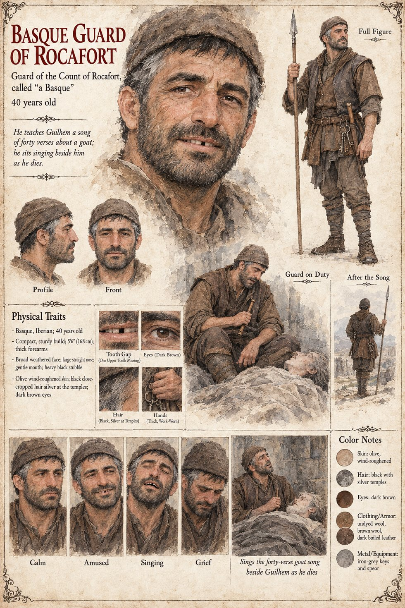

The Basque Guard of Rocafort
Guard of the Count of Rocafort, called “a Basque” · unnamed · about 40 years old by his sheet
He is known to the manuscript by two sentences. In the letters he is allowed to send from the cell beneath Rocafort's hall, Guilhem reports, in his light tone, that the guard, a Basque, has taught him a song of forty verses about a goat. On the fourteenth of Lorren Guilhem dies of his cough on a pallet of straw in a dry stone room, and the Basque guard is sitting by him, singing in a low voice the sixth verse of the song.
That is all the text says of him. He has no name, no speech and no later scene, and the manuscript does not say what became of him. It is enough to put a small human figure inside the count's arithmetic: a guard who sits by a dying prisoner and is still singing, on the sixth verse of forty. The sheet's forty years, olive wind-roughened skin, one missing upper tooth, black hair silvering at the temples, ring of keys and spear are its own, and so is the caption that he sings the goat song beside Guilhem as he dies.